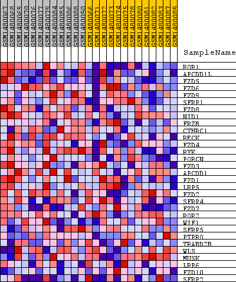
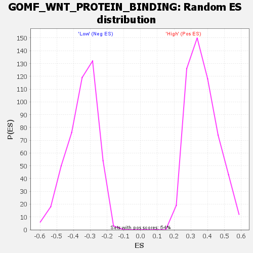

Profile of the Running ES Score & Positions of GeneSet Members on the Rank Ordered List
| Dataset | WG6v3.MRPL3.cls#High_versus_Low.MRPL3.cls#High_versus_Low_repos |
| Phenotype | MRPL3.cls#High_versus_Low_repos |
| Upregulated in class | High |
| GeneSet | GOMF_WNT_PROTEIN_BINDING |
| Enrichment Score (ES) | 0.743284 |
| Normalized Enrichment Score (NES) | 2.0140705 |
| Nominal p-value | 0.0 |
| FDR q-value | 0.0034916757 |
| FWER p-Value | 0.036 |
| SYMBOL | TITLE | RANK IN GENE LIST | RANK METRIC SCORE | RUNNING ES | CORE ENRICHMENT | |
|---|---|---|---|---|---|---|
| 1 | ROR1 | ROR1 | 34 | 0.348 | 0.1516 | Yes |
| 2 | APCDD1L | APCDD1L | 298 | 0.191 | 0.2220 | Yes |
| 3 | FZD5 | FZD5 | 528 | 0.147 | 0.2752 | Yes |
| 4 | FZD6 | FZD6 | 568 | 0.142 | 0.3357 | Yes |
| 5 | FZD9 | FZD9 | 620 | 0.137 | 0.3932 | Yes |
| 6 | SFRP1 | SFRP1 | 638 | 0.134 | 0.4515 | Yes |
| 7 | FZD8 | FZD8 | 949 | 0.108 | 0.4831 | Yes |
| 8 | NID1 | NID1 | 1265 | 0.088 | 0.5058 | Yes |
| 9 | FRZB | FRZB | 1331 | 0.085 | 0.5399 | Yes |
| 10 | CTHRC1 | CTHRC1 | 1344 | 0.085 | 0.5766 | Yes |
| 11 | RECK | RECK | 1453 | 0.081 | 0.6066 | Yes |
| 12 | FZD4 | FZD4 | 1563 | 0.076 | 0.6344 | Yes |
| 13 | RYK | RYK | 1686 | 0.071 | 0.6595 | Yes |
| 14 | PORCN | PORCN | 1859 | 0.066 | 0.6796 | Yes |
| 15 | FZD3 | FZD3 | 1899 | 0.065 | 0.7061 | Yes |
| 16 | APCDD1 | APCDD1 | 1965 | 0.063 | 0.7303 | Yes |
| 17 | FZD1 | FZD1 | 2546 | 0.049 | 0.7220 | Yes |
| 18 | LRP5 | LRP5 | 2552 | 0.049 | 0.7433 | Yes |
| 19 | FZD2 | FZD2 | 4055 | 0.028 | 0.6783 | No |
| 20 | SFRP4 | SFRP4 | 6410 | 0.011 | 0.5618 | No |
| 21 | FZD7 | FZD7 | 6910 | 0.009 | 0.5399 | No |
| 22 | ROR2 | ROR2 | 8288 | 0.003 | 0.4703 | No |
| 23 | WIF1 | WIF1 | 8558 | 0.002 | 0.4573 | No |
| 24 | SFRP5 | SFRP5 | 9058 | 0.000 | 0.4318 | No |
| 25 | PTPRO | PTPRO | 10089 | -0.003 | 0.3800 | No |
| 26 | TRABD2B | TRABD2B | 10170 | -0.003 | 0.3774 | No |
| 27 | WLS | WLS | 13107 | -0.016 | 0.2331 | No |
| 28 | MUSK | MUSK | 14630 | -0.027 | 0.1665 | No |
| 29 | LRP6 | LRP6 | 15334 | -0.034 | 0.1451 | No |
| 30 | FZD10 | FZD10 | 17105 | -0.057 | 0.0791 | No |
| 31 | SFRP2 | SFRP2 | 18372 | -0.092 | 0.0541 | No |

